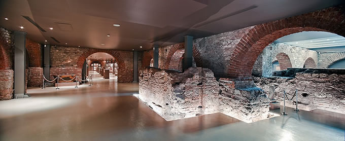

Rahmi Koç Müzesi
AçıklamaREZAN HAS MÜZESİ TARİHÇE: Haliç’in endüstri-sonrası mekansal dönüşüm sürecinde, müzelerin, kültür merkezlerinin sıralandığı bir kentsel festival ve kutlama mekanı olması yönünde güçlü yatırımlar yapıldı. Bu yatırımlar Haliç’in Kuzey yakasında yer alan yapı mirası (fabrikalar, tersaneler, gemi kızakları, elektrik santralleri, mezbahalar, vb) kullanılarak yapılmakta. Kuzey Haliç İstanbul Modern’den başlayarak, Tersane-i Amire, Aynalıkavak Kasrı, Koç Müzesi, Sütlüce Kültür Merkezi, Minyatürk, Silahtarağa Müze Bölgesi’ne kadar uzanan bir süreklilikte bir kültür kıyısı haline gelme sürecindedir. Buna karşın liman yapıları birikimi neredeyse tamamen silinen Güney Haliç kıyısında özellikle Eminönü Eyüp arasındaki bölgede- Kuzey kıyısına benzer bir aktivite yoğunluğundan bahsetmek mümkün değildir. Kıyı gerisinde Fener-Balat, Tahtakale gibi önemli çekim noktaları yer alsa da, kıyıda Feshane-i Amire, Kadın Eserleri Kütüphanesi, Zindan Han ve Baba Cafer Zindanı dışında kent bütününe hitap eden alanların olduğunu söylemek zordur. Haliç, bir “müze limanı” haline getirilmekte ve Güney yakasının da benzer bir aktivite yoğunluğu ile dengelenmesi gerekmektedir. Kadir Has Üniversitesi bünyesinde yer alan “Rezan Has Müzesi” bu bağlamda çok önemli bir girişimdir ve böylesi bir stratejik coğrafi çerçeve içinde büyük bir boşluğu doldurmaktadır. 2002 yılında Kadir Has Vakfı tarafından Cibali Tütün ve Sigara Fabrikası’ndan dönüştürülen Kadir Has Üniversitesi merkez binası; son derece özenli ve kapsamlı restorasyonu ve içinde yer aldığı tarihi çevrenin gelişimine katkısı nedeniyle 2003 yılında Europa Nostra Ödülü almıştır. Restorasyonu tamamlandıktan sonra Kadir Has Üniversitesi’ne dönüştürülen bu tarihi binanın alt kısmında yer alan Osmanlı dönemi yapı kalıntısı ve Bizans Dönemi su sarnıcının gün yüzüne çıkmasıyla, mekan Rezan Has Müzesi olarak ziyarete açılmıştır. Seferikos Sarnıcı ve Osmanlı Yapısı: Yeraltındaki kagir su depoları olan sarnıçlar, Bizans döneminde, İstanbul’un su ihtiyacını karşılamakta önemli rol oynamış yapılardır. Müzemizde yer alan, geç 11. yüzyıla tarihlenen Bizans dönemi su sarnıcı 48 kemer, 15 ayak ve 20 sütundan oluşmaktadır. Kareye yakın dikdörtgen bir plana sahip olan yapı, doğrudan su biriktirmek amacıyla inşa edilmiştir. Sarnıç; işlevini kaybettikten sonra Cibali Sigara Tütün Fabrikası’nın tütün deposu olarak, ardından II. Dünya Savaşı yıllarında ise erzak ambarı olarak kullanılmıştır.
Avrupa Nostra 2003 Ödülü Avrupa Kültürel ve Doğal Miras Birliği Europa Nostra ,dünya kültür mirasını korumaya yönelik olarak çalışan bağımsız bir kuruluştur. Cibali Tütün ve Sigara Fabrikasından dönüştürülen Kadir Has Üniversitesi merkez binası son derece özenli ve kapsamlı restorasyonu, içinde yer aldığı tarihi çevrenin gelişimine katkısı nedeniyle Avrupa Nostra 2003 ödülüne değer bulunmuştur. Rezan Has Müzesi Urartu Takıları restorasyon ve konservasyon projesinin tamamlanmasıyla Urartu Takı Koleksiyonu Sergisi 22 Mayıs 2014 Perşembe günü sanatseverlerle buluşuyor. Bank of Amerikan Merrill Lynch'in küresel ölçekli Sanatı Koruma Projesi kapsamında destek verdiği Urartu Takıları Sergisi, dünyada alanındaki en geniş koleksiyonlardan biri olma niteliği taşıyor.
|
|
Yaz Dönemi 1 Nisan - 31 Ekim Açılış Saati: 09:00 Kapanış Saati: 18:00 |
Kış Dönemi 31 Ekim - 1 Nisan Açılış Saati: 09:00 Kapanış Saati: 18:00 |
|
Gişe Yaz / Kış Kapanış Saatleri Yaz Dönemi: 18:00 Kış Dönemi: 18:00 |
Adres: Kadir Has Üniversitesi, Cibali - İstanbul, 34083 / Türkiye |
|
Kapalı Günler Özel Günlerde Kapalı |
Giriş Ücreti : Tam Bilet : 5 TL İndirimli Bilet : 3 TL |